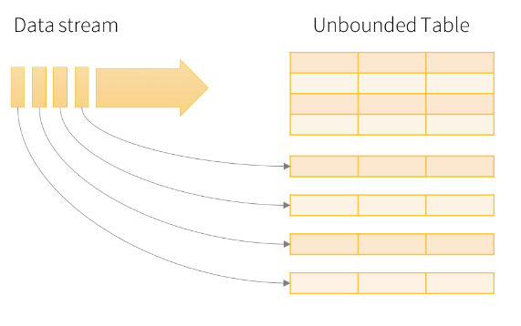

Getting Started with Spark Streaming
Kevin Feasel (@feaselkl)https://csmore.info/on/sparkstreaming
Who Am I? What Am I Doing Here?


Agenda
- The Origins of Spark
- What is Spark Streaming?
- Our First Streaming Example
- A Full Program
- .NET and Spark Streaming
The Genesis of Spark
Spark started as a research project at the University of California Berkeley’s Algorithms, Machines, People Lab (AMPLab) in 2009. The project's goal was to develop in-memory cluster computing, avoiding MapReduce's reliance on heavy I/O use.
The first open source release of Spark was 2010, concurrent with a paper from Matei Zaharia, et al.
In 2012, Zaharia, et al release a paper on Resilient Distributed Datasets.
Resilient Distributed Datasets
The Resilient Distributed Dataset (RDD) forms the core of Apache Spark. It is:
- Immutable – you never change an RDD itself; instead, you apply transformation functions to return a new RDD
Resilient Distributed Datasets
The Resilient Distributed Dataset (RDD) forms the core of Apache Spark. It is:
- Immutable
- Distributed – executors (akin to data nodes) split up the data set into sizes small enough to fit into those machines’ memory
Resilient Distributed Datasets
The Resilient Distributed Dataset (RDD) forms the core of Apache Spark. It is:
- Immutable
- Distributed
- Resilient – in the event that one executor fails, the driver (akin to a name node) recognizes this failure and enlists a new executor to finish the job
Resilient Distributed Datasets
The Resilient Distributed Dataset (RDD) forms the core of Apache Spark. It is:
- Immutable
- Distributed
- Resilient
- Lazy – Executors try to minimize the number of data-changing operations
Add all of this together and you have the key component behind Spark.
Agenda
- The Origins of Spark
- What is Spark Streaming?
- Our First Streaming Example
- A Full Program
- .NET and Spark Streaming
Conceptually, Spark Streaming allows us to work with Resilient Distributed Datasets over time.
DStreams and Microbatches
DStreams are simply time-aware RDDs. Instead of using backward-looking historical data, we use forward-looking near-present data.
To maximize performance, Spark tends to wait a certain amount of time and build a microbatch--this reduces the cost of processing overhead by packing more than one record into a DStream.
DataFrames
With Apache Spark 2.0, the model shifted from Resilient Distributed Datasets to Datasets and DataFrames.
Datasets are strongly-typed RDDs.
DataFrames are Datasets with named columns (Dataset[Row] in Scala). DataFrames are untyped in Python and R, and in all languages slice data into named columns.
DataFrames
Datasets and DataFrames provide several advantages over RDDs:
- Native SQL support
- Compile-time errors
- The ability to structure data in code
- (Sometimes) better performance
A Brief Primer on Windows
Spark Streaming has two key types of windows: tumbling and sliding. Suppose we have events which happen over time:

Tumbling Windows
In a tumbling window, we have non-overlapping intervals of events captured during a certain time frame.

Sliding Windows
In a sliding window, we have potentially-overlapping intervals. We have a window length (in units of time) and a sliding window interval (in units of time).

Agenda
- The Origins of Spark
- What is Spark Streaming?
- Our First Streaming Example
- A Full Program
- .NET and Spark Streaming
Hello World: DStream
Hello World: DStream
Demo Time
Agenda
- The Origins of Spark
- What is Spark Streaming?
- Our First Streaming Example
- A Full Program
- .NET and Spark Streaming
Cars: a Story in Three Services
Our company has automobile data stored in an Apache Kafka topic. We'd like to migrate that data over to a Cassandra database for analysis. With Spark Streaming, we can do this easily.

Demo Time
Agenda
- The Origins of Spark
- What is Spark Streaming?
- Our First Streaming Example
- A Full Program
- .NET and Spark Streaming
Capabilities
Microsoft.Spark allows us to execute code in .NET DLLs or executables against Spark clusters. Key functionality:
- Both C# and F# are supported.
- Use the DataFrames API for Spark Structured Streaming.
- Import additional libraries using Maven.
- Debugging is possible from within Visual Studio and Visual Studio Code.
Limitations
- No support for DStreams.
- Support for Spark versions tends to lag.
- Error handling can be a pain.
Approach
- Build .NET code in Visual Studio / VS Code.
- Build a Docker container with .NET Core + Java and install Spark.
- Run the `spark-submit` command, sending all necessary parameters.
Demo Time
What's Next
We've only scratched the surface of Spark Streaming. Additional topics of interest include:
- Watermarking and late-arriving data
- Checkpoints and recovery from failure
- Window functions in Spark SQL
Wrapping Up
To learn more, go here:
https://csmore.info/on/sparkstreaming
And for help, contact me:
feasel@catallaxyservices.com | @feaselkl
Catallaxy Services consulting:
https://CSmore.info/on/contact